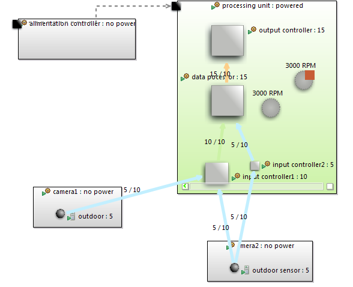

Now, we want to use the base model decorator to express that this Fan is added on an optional feature directly on the base model graphical view. To do this, you need to activate the layer <viewpoint name > Optional Decorator on Obeo Designer. To do this, click on the icon outlined in red on the following and then check Optional Domain Model Element.

As shown on the following figure an orange square decorator is added on the Fan element.

![[Important]](gfx/admonitions/important.gif) | Use Refresh |
|---|---|
You need sometimes to use Refresh icon outlined in blue on the figure above. If it does not work, close the Topography diagram and open it again. |
So, you have obtained a way to display variability information on base model.